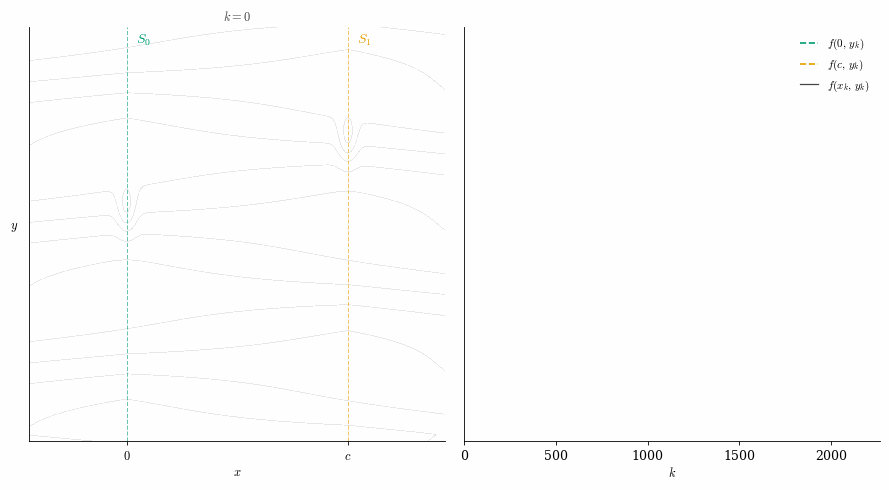

On convergence rates of subgradient descent on semialgebraic functions
arXiv preprint, 2026

I work in continuous optimization, usually motivated by problems arising in machine learning. My main interest lies in the analysis of first-order methods in stochastic, nonconvex, nonsmooth, and semialgebraic settings. I am also interested in optimization on manifolds, the theory of deep learning, and more generally in the geometry underlying optimization.
Publications & preprints
2026
On convergence rates of subgradient descent on semialgebraic functions
arXiv preprint, 2026

The Gradient's Limit of a Definable Family of Functions Admits a Variational Stratification
SIAM Journal on Optimization 36(2):1075–1099
2025
The late-stage training dynamics of (stochastic) subgradient descent on homogeneous neural networks
COLT 2025 · PMLR 291:5143–5172
2024
Stochastic subgradient descent escapes active strict saddles on weakly convex functions
Mathematics of Operations Research 49(3):1761–1790
2023
Stochastic proximal subgradient descent oscillates in the vicinity of its accumulation set
Optimization Letters 17(1):177–190
Orthogonal directions constrained gradient method: from non-linear equality constraints to the Stiefel manifold
COLT 2023 · PMLR 195:1228–1258
ASkewSGD: an annealed interval-constrained optimisation method to train quantized neural networks
AISTATS 2023 · PMLR 206:3644–3663
2022
Convergence of constant step stochastic gradient descent for non-smooth non-convex functions
Set-Valued and Variational Analysis 30(3):1117–1147
First-order constrained optimization: non-smooth dynamical system viewpoint
IFAC-PapersOnLine 55(16):236–241 · CAO 2022
2021
Stochastic optimization with momentum: convergence, fluctuations, and traps avoidance
Electronic Journal of Statistics 15(2):3892–3947
2019
Passty Langevin
CAP, Toulouse, France
Work experience
Télécom SudParis (SAMOVAR) — Assistant Professor
École Polytechnique (CMAP) — postdoc, with Éric Moulines
Université Gustave Eiffel (LIGM) — PhD, with Pascal Bianchi and Walid Hachem